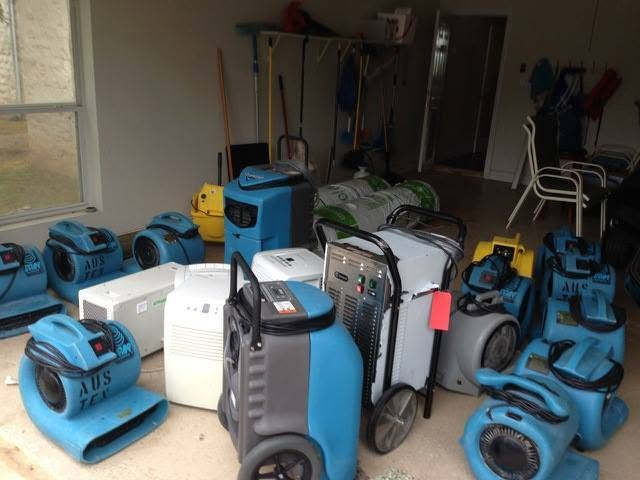

Flood Insurance or Homeowners: Which One Pays
Water from outside is flood. Water from inside is homeowners. In Pinellas County that single line decides who pays for the damage.

Water damage restoration cost in Largo is driven by three things: how much of the building got wet, how long it stayed wet, and how much material has to come out. Square footage alone does not set the price, which is why two jobs of the same size can differ sharply.
Nobody can quote a water loss accurately over the phone without knowing those three things. What a crew can do on the call is tell you what will move the number before any equipment is placed.
Water coming in right now? Call and we will confirm an arrival window for your address.
Call (833) 289-9993| Driver | Why it matters |
|---|---|
| Affected area | Sets equipment count and the number of days on site |
| Time the material stayed wet | Decides whether material is dried or removed |
| Water category | Category three means removal and disposal rather than drying |
| Materials involved | Hardwood, plaster and cabinets cost more to save than carpet |
Time is the driver owners control. A single wet room caught in the first hours is a fraction of the same room found a week later, because by then the question has moved from drying to demolition and rebuild.
Mitigation is the emergency work: extraction, removal of unsalvageable material, equipment and drying. Rebuild is drywall, texture, paint, flooring and trim.
These are two line items on a claim and often two phases of work. A quote covering only one of them is not comparable to a quote covering both, which is the most common reason estimates look wildly different.
Not sure whether this is a job for a crew? Describe what you are seeing and we will tell you plainly.
Call (833) 289-9993Shutting the water off quickly. Calling before the second day. Lifting contents off the floor yourself. Having the shutoff accessible. Knowing whether the water was clean.
Accurate moisture mapping also reduces cost, because it prevents both under drying, which causes a second job later, and over demolition, which bills for rebuild that was never needed.
Equipment is normally billed per unit per day. That is why the count matters and why it is calculated from room volume and the class of loss rather than set by habit.
It is also why switching equipment off overnight costs money rather than saving it. Drying is cumulative, and every shutdown adds days to the total.
Where a loss is covered, you generally pay the deductible and the carrier pays the balance of what is agreed. The practical question is whether the total is far enough above your deductible to be worth a claim at all.
Small losses sometimes cost less than the deductible, and a claim history in Florida can affect renewal. Ask your agent how a claim of that size would be treated before filing.
For the full scope of extraction, drying and repair work across Pinellas County, see water damage restoration in Largo, FL.
Get it handled
Call if any of these apply. A two minute conversation is usually enough to tell you whether the work needs a crew.
Availability is confirmed when you call, with an arrival window for your address.
Call (833) 289-9993Related guides
Water from outside is flood. Water from inside is homeowners. In Pinellas County that single line decides who pays for the damage.
Florida policies cover sudden accidental water damage and exclude rising water and long term seepage. Here is how the line is drawn.
Burst pipe first steps for a Largo, FL home. Where to shut the water off, what to photograph, and what to move before anyone else arrives.
Water damage in a Largo slab home moves sideways, not down. Here is what happens hour by hour, and which first-day calls decide what gets saved.
Services
Calculated equipment loads with daily logs that support the claim.
Phased commercial dry out with documentation for business interruption.
Questions
It depends on the wet area, how long it stayed wet and how much material must be removed. A room caught early costs a fraction of the same room found a week later.
Because the three things that set the price, wet area, time wet and material affected, are not known until a meter reading is taken in the building.
Yes. Mitigation covers extraction, removal and drying. Rebuild covers drywall, texture, paint and flooring. Quotes covering only one are not comparable.
Normally per unit per day, which is why counts are calculated from room volume and the class of loss rather than set by habit.
No, it costs money. Drying is cumulative and every shutdown lets material reabsorb moisture, adding days to the total.
Not always. If the total is close to your deductible it may not be worth it, and claim history can affect renewal in Florida. Ask your agent first.
Different category of water, different materials and a different response time. Two rooms of the same size can need entirely different scopes.
Usually. Mat drying runs longer than carpet drying, though it is still generally cheaper than replacing the floor and matching the rest of the house.
Slab construction spreads water into extra rooms, block walls dry slowly, and high dew points extend the number of days equipment has to run.
Shut the water off fast, call the same day, lift contents off the floor and keep the structure closed so the drying equipment can do its work.
Call and describe what you are seeing. We confirm an arrival window for your address.